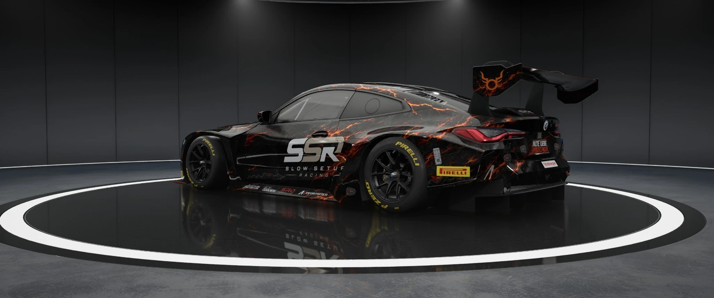
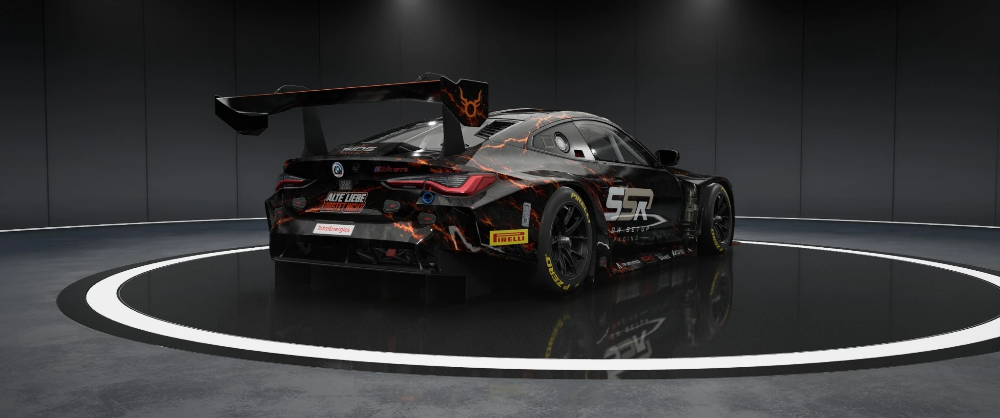
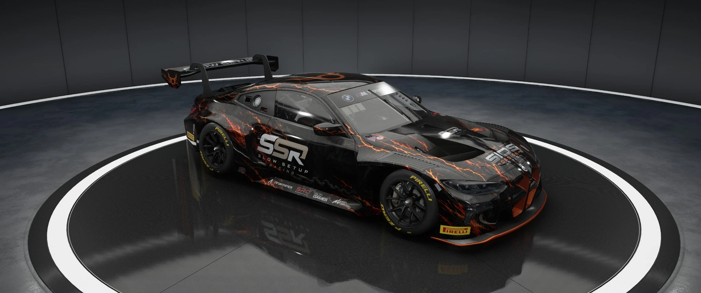
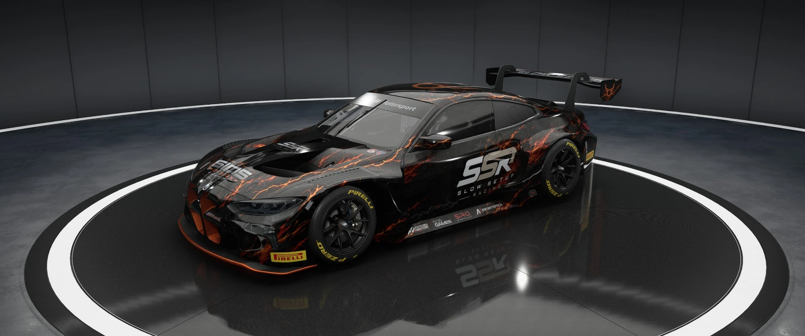

SIDS SIGNATURE LIVERIES / CURRENT RACING01 / 02
DESIGNED BY SID. RACED BY SID.
BMW M4 GT3 · SLOW SETUP RACING




BLACK × ORANGE · SIGNATURE DESIGN Wischen oder die Pfeile verwenden.
01 / 05
RACING LEGACY · Weitere eigene Liveries aus vergangenen Seasons folgen.